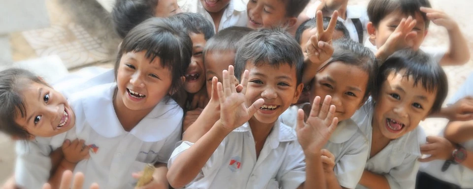

ОБЩА ПОДКРЕПА
Общата подкрепа включва:
- обучение чрез допълнителни модули за деца, които не владеят български език;
- дейности за прилагане на програми за психомоторно, познавателно и езиково развитие;
- ндивидуална и групова работа при установени езикови и/или емоционално-поведенчески, и/или сензорни затруднения.
Обща подкрепа в рамките на ДГ и/или училището:
- обучение чрез допълнителни модули за деца, които не владеят български език;
- дейности за прилагане на програми за психомоторно, познавателно и езиково развитие;
- индивидуална и групова работа при установени езикови и/или емоционално-поведенчески, и/или сензорни затруднения.
Общата подкрепа в ДГ и училище включва:
- eкипна работа между учителите и другите педагогически специалисти;
- допълнително обучение по учебни предмети;
- допълнително консултиране по учебни предмети;
- кариерно ориентиране на учениците;
- занимания по интереси;
- библиотечно-информационно обслужване;
- грижа за здравето;
- осигуряване на общежитие;
- поощряване с морални и материални награди;
- дейности за превенция на насилието и преодоляване на проблемното поведение; дейности за превенция на обучителните затруднения, включително логопедична работа.
Обща подкрепа за личностно развитие в ЦПЛР:
- анимания по интереси за развитие на интересите, способностите и компетентностите на децата и учениците в областта на науките, технологиите, изкуствата и спорта и изяви по интереси;
- кариерно ориентиране на учениците;
- педагогическа и психологическа подкрепа, включително дейности за превенция на насилието и преодоляване на проблемното поведение;
- грижа за здравето;
- осигуряване на общежитие;
- поощряване с морални и материални награди;
- ранно оценяване на потребностите и превенция на обучителните затруднения;
- логопедична работа;
- екипна работа между учителите и другите педагогически специалисти.